四月十八日 (一)
Selçuk
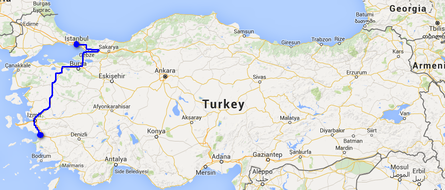
巴士駛到 Izmir 嘅 octogar，天仍然黑，但我醒咗，睇住車一路行，天一路光，嚟到一個好似小鎮嘅地方又停低，飲飲茶，人精神咗。冇幾耐之後就到 Selçuk。
落車後，另一個乘客問我去邊，我仲以為得我一個遊客，因為佢個樣似當地人。佢叫 Ahmed (好似係)，原來係孟加拉人，不過响美國做咗好多年嘢，亦係嚟土耳其旅遊。不過佢冇地圖，我帶佢去我原本想去嘅旅館，附近見到佢想去嘅嗰間。我又跟埋佢去。叫做 ANZ Guesthouse，60 TL 一晚，唔錯，而且啲人好好，基本上今日同聽朝嘅嘢都靠佢安排。
因為我哋今朝至到達，原本係冇時間去 join tour，乜地方都要自己去，guesthouse 嘅人詳細地教我哋應該點去，要幾多錢，但都幾貴。不過之後竟然俾佢安排到我哋可以加入一個 tour。120 TL 一人就得。另外又幫 Ahmed 搞好之後嘅交通，所以其實有時都幾好彩。
食完早餐就出發，原本嘅 tour 得一個三人家庭，父母加一個 B，巴基斯坦人不過响杜拜打工。導遊問我哋嘅宗教信仰，他們全都係穆斯林，我就話我冇，然後導遊話，點都好，最重要係 peace。wow... love and peace...
成架車就得我哋幾個，所以好舒服。首先去的係 House of the Virgin Mary，原來話聖母瑪利亞餘生就响度過，但間 house 似教堂多過用嚟住嘅屋，如果係真嘅呢個景點應該出名同神聖到爆至啱，我哋都半信半疑。不過見到有啲人參觀到好感動，喊晒。
之後去 Ephesus，其實嚟 Selçuk 主要目的就係去 Ephesus，原來 Ahmed 同巴勒斯坦夫婦對古蹟嘅建築同歷史都好有認識，導遊話啲柱係乜嘢時期嘅風格，佢哋都噏得出，Ephesus 中啲神像佢哋又估得到，我完全係個盲毛。
裏面有個女神像，導遊話佢叫 Nike 女神，唔似香港人咁讀埋個 ke 音，所以我初頭都唔知佢指乜嘢。原來佢講嘅係勝利女神，佢指住石像身上嘅一個 V 形，話 Nike 標誌係咁而嚟架喎。:o
好好彩個 tour 有遮提供，呢度係今次旅行最曬最熱嘅，但好似只有我哋擔遮，導遊話佢哋每次都叫人帶遮，但每次都冇人會理，所以索性提供埋。雖然啲唔方便，但真係好有用，有風時仲好舒服。
個 Library 同 Theatre 都好宏偉，Theatre 仲會用嚟做鬥獸場，不過話原來以前啲人係表演咋，唔好俾電影誤導。
離開 Ephesus 時，見紀念品店擺放啲導覽書，有唔同文字版本，見到中文嘅，寫住「以弗所」，我至知道原來頭先去嘅就係聖經那個以弗所，我係咪傻架…
Tour 除咗包所有入場費仲包一餐 lunch buffet，我之前嘅胃口細到好似唔使食咁，今日終於開咗胃，吃咗兩轉，不過都唔及佢哋，點解可以食咁多嘢……叫飲品要額外收費，我叫咗 lemonade，巴基斯坦父妻請我哋飲，可能他响杜拜真係幾好搵，之後 tour 其中一個節目 shopping，帶我哋去睇皮夾衣物，睇 fashion show…. 每件幾百美金，佢哋又真係買咗幾件。
土耳其當地 Tour 通常會有一個點係購物，不過都係例行，唔買唔會打死你。不過 fashion show 仲係第一次，感覺真係好搞笑呢……
購物用得太多時間，趕返去 Selçuk 睇 isa Bey Camii 同 Temple of Artemis，Camii 即係 Mosque，响土耳其見到嘅都用 Camii。原來 Temple of Artemis 係古代嘅七大奇蹟之一，而家得返幾條柱。
Tour 完之後我同 Ahmed 去睇 Basilica of St. John，又係話 St. John 葬响度，約翰喎，係十二門徒嗰個喎，覺得好奇怪，應該係好重要嘅地方。看完响呢度嘅一塊草地休息，我响樹蔭大字形躺著，從未試過咁做，好舒服，好想就咁睡落去。
過咗唔知幾耐，唔知做乜好，就去埋個博物館，估唔到都幾多嘢睇，今日响 Ephesus 裏面導遊講嘅其中一座代表豐收嘅神像，就放咗响呢度。
因為愛上鮮橙汁嘅關係，到處搵，响 Octogar 嘅食店買到，4 TL 好大杯。
我冇諗過今晚就會去 Hammam (Turkish Bath)，係 Ahmed 睇到 Guesthouse 有介紹，幾十 TL 全包，就去，我本來打算返伊斯坦堡至去嘅。
原來平時見到有嘅屋有圓頂嘅頂上面有一個個玻璃樽咁嘅就係浴室。入到去勁濕，空氣都係熱同濕，我對於呢種環境有恐懼，覺得自己呼吸唔到，心諗今次死梗，要唔要中途離場。不過神奇地，過咗一陣慢慢冇事，不知係心理定點。
俾人用刷刷到好多污垢出嚟，真係唔知原來自己咁污漕。然後 Massage 至勁，痛到我癲咗，佢仲一嘢壓到我胸骨格格聲，基本上手手腳腳全身會痛嘅位都按仲要大大力，好唔容易按完，他向我舉起手指公，唔知係話完喇定係話我忍得。
然後，Ahmed 竟然死都唔做 massage，究竟點解？但係做完我覺得真係正。埋單全包 70 TL。
返到 guesthouse，Ahmed 仲要去 Mosque 度祈禱，等埋佢食飯，guesthouse 老闆見我哋咁夜仲未食仲整熱啲嘢請我哋食，仲要好豐富。老闆和我哋傾偈，對其他國家嘅穆斯林好不滿，話他們髒，穆斯林本應係好重視潔淨至啱，又話伊朗不好。
傾完都好夜，乜今日好似做咗好多嘢咁。
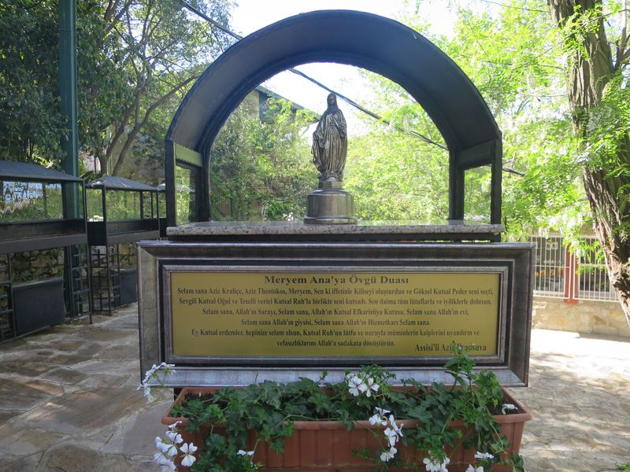
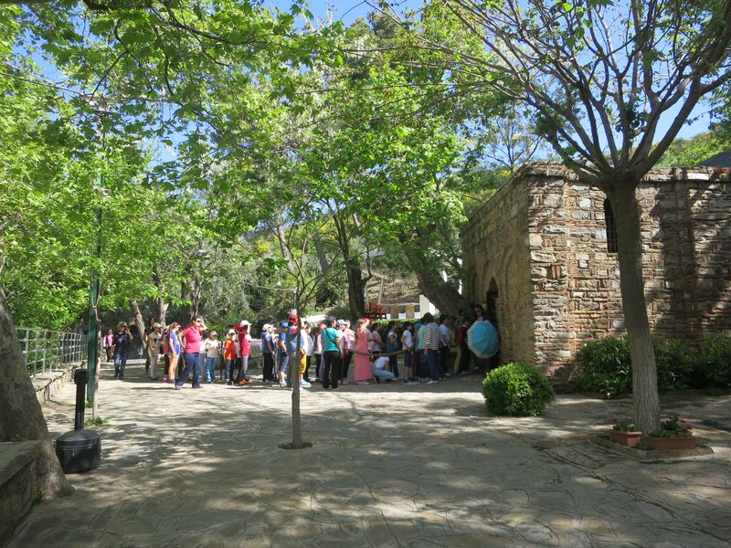
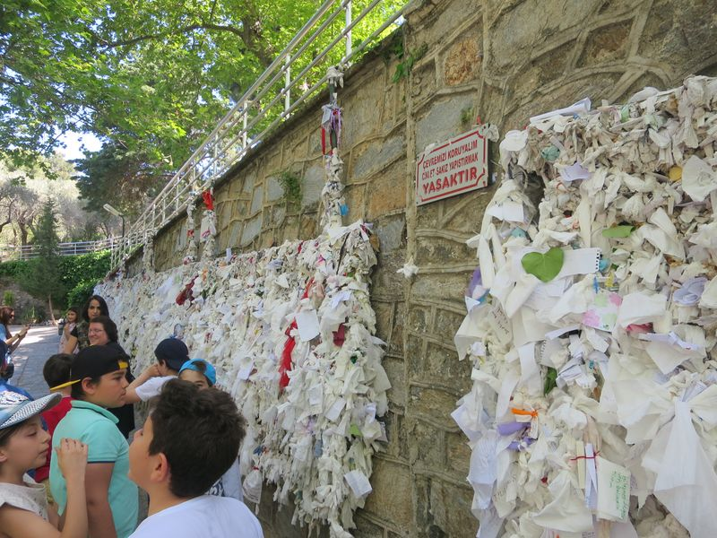
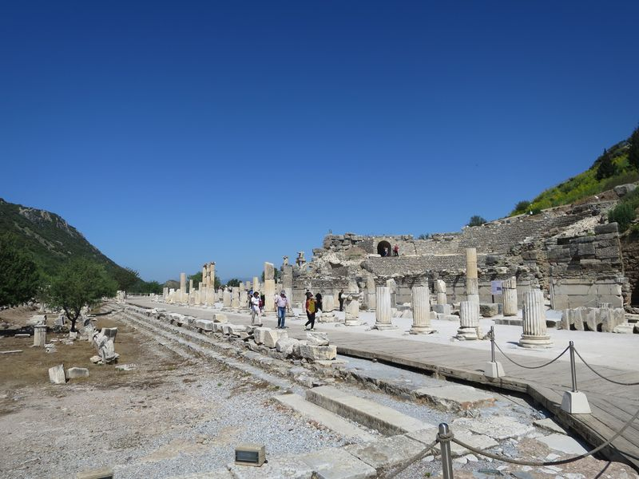Ephesus
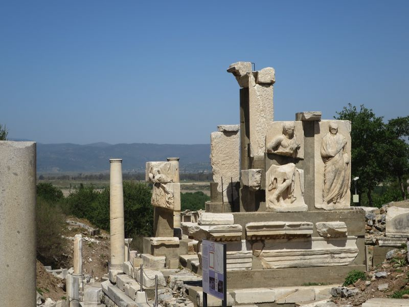
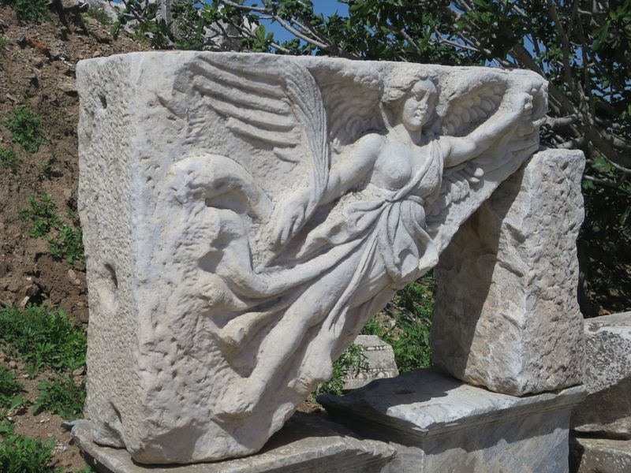
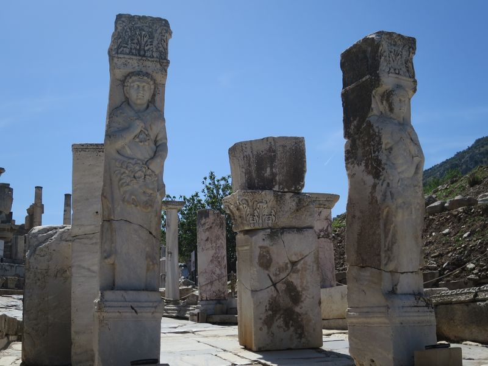
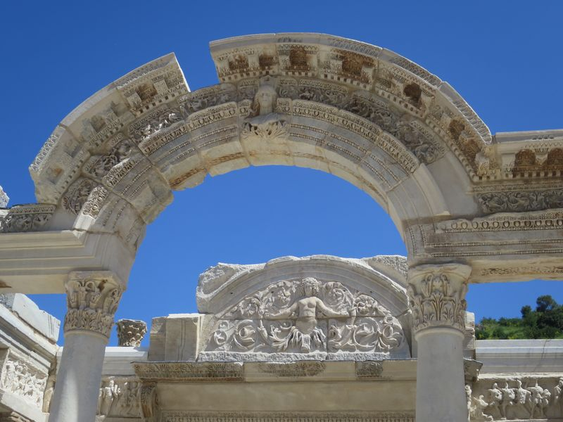
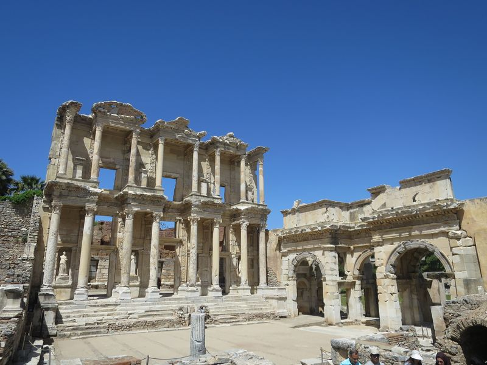
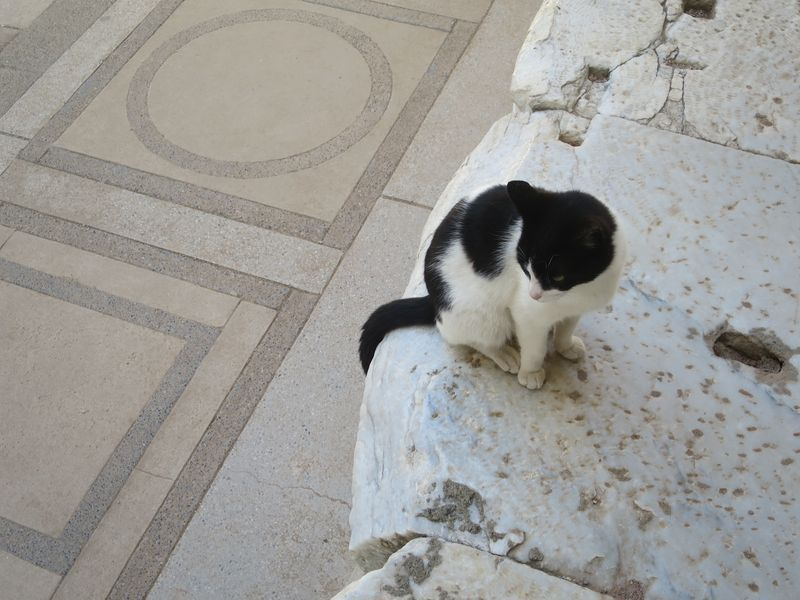
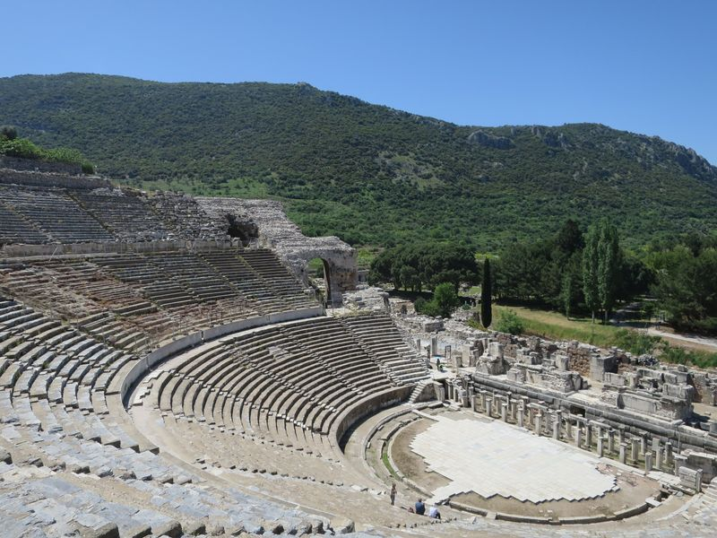
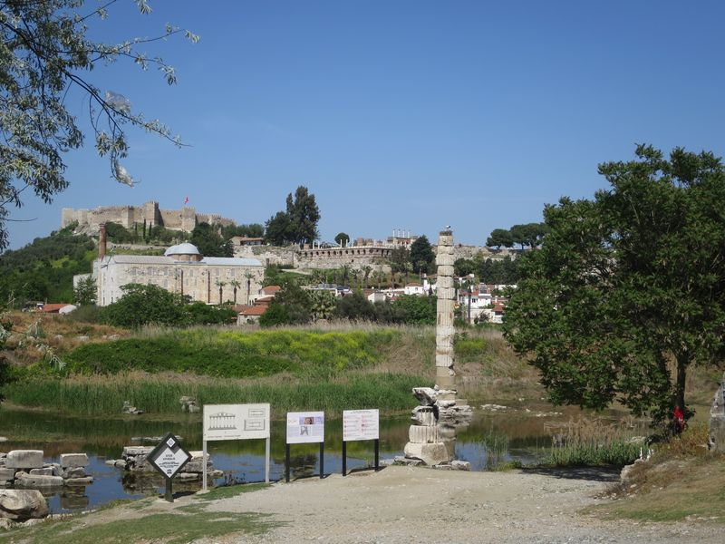
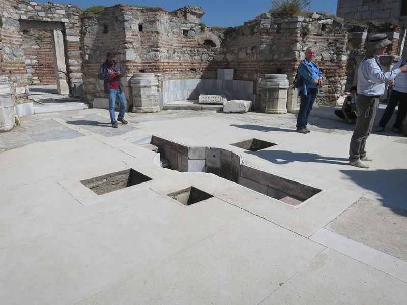
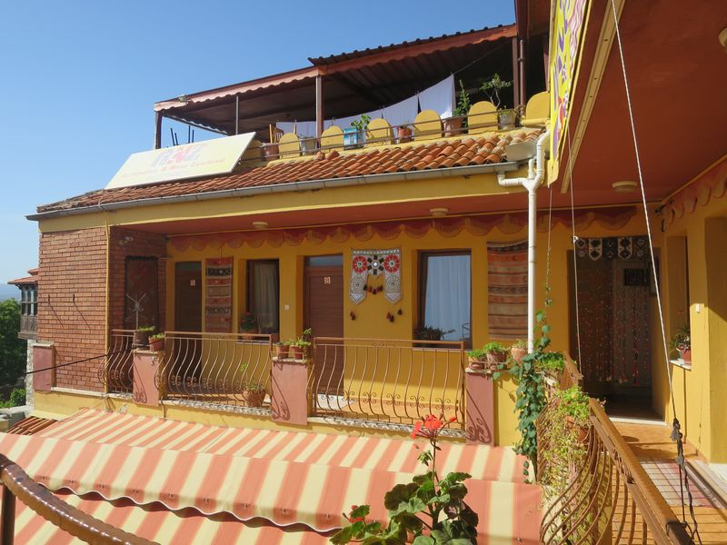ANZ Guesthouse
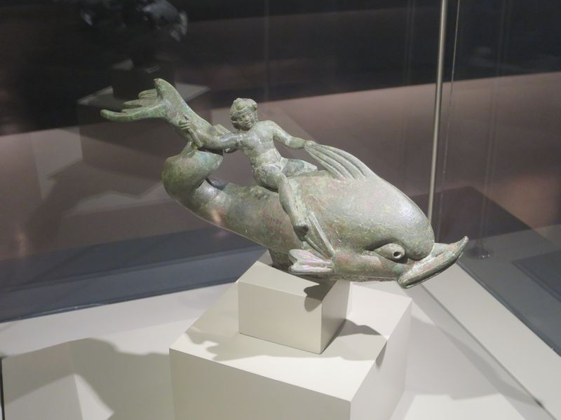
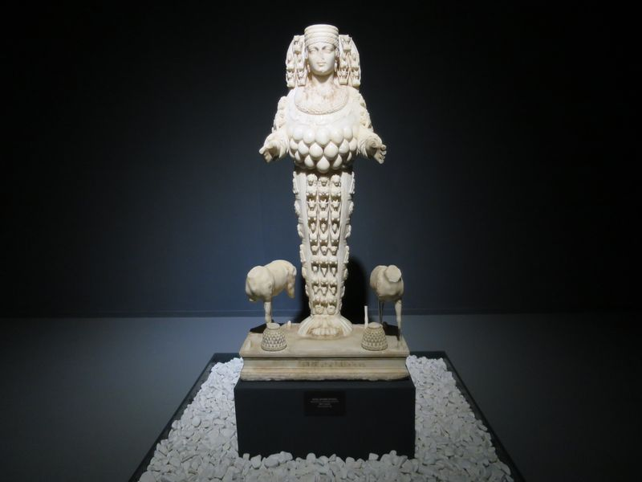
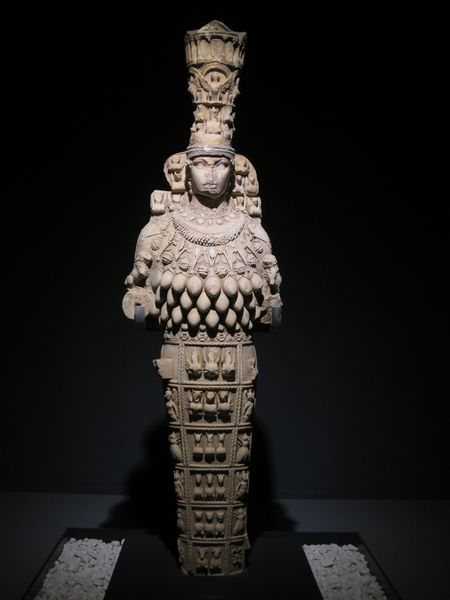
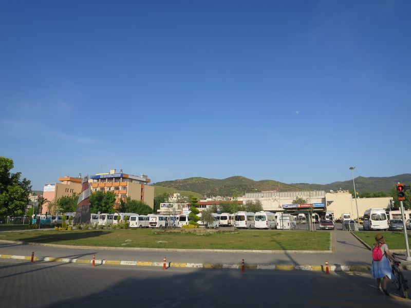
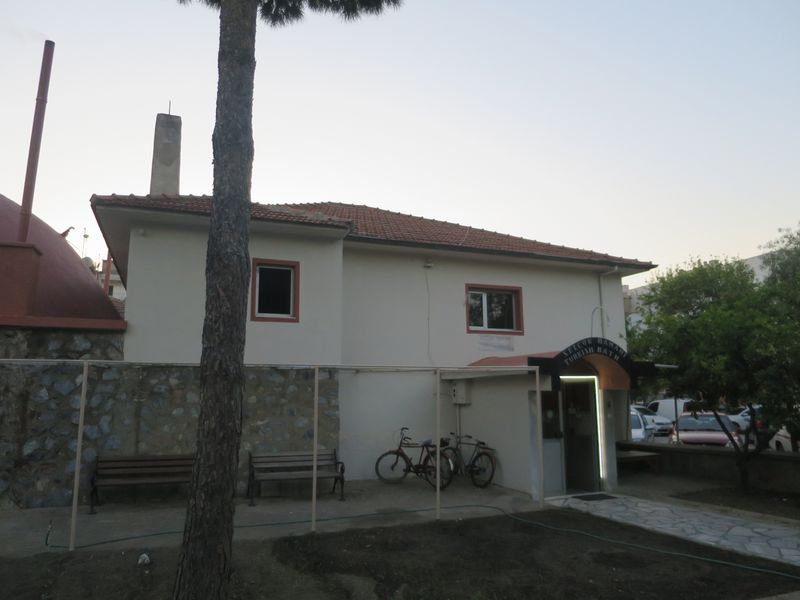Turkish Bath
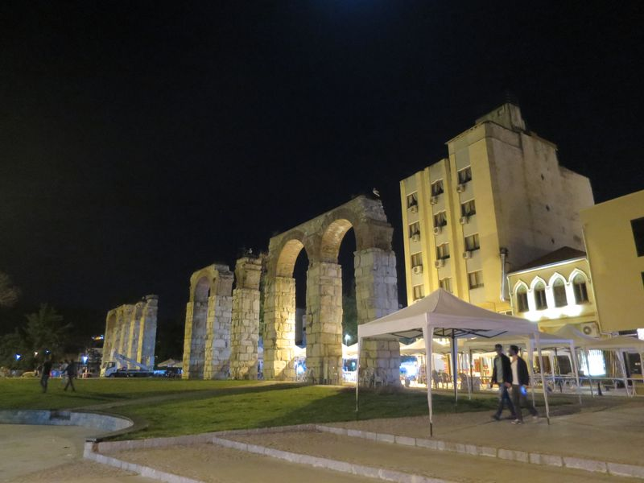
2016 Turkey
❮ Previous
Next ❯